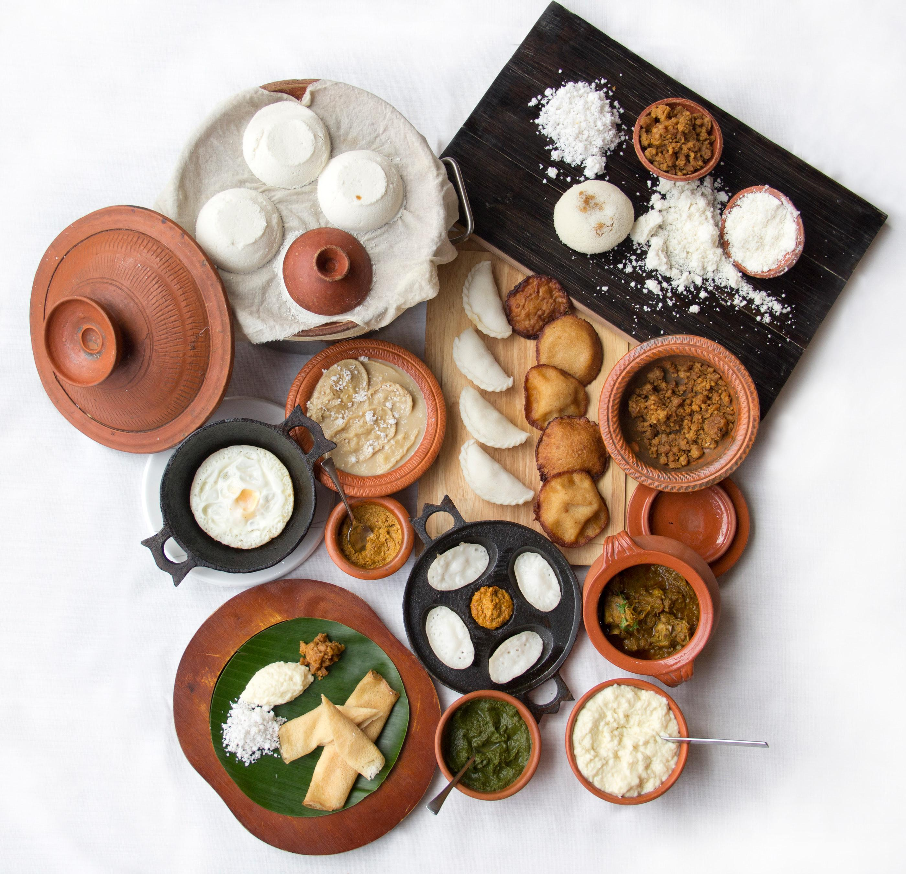
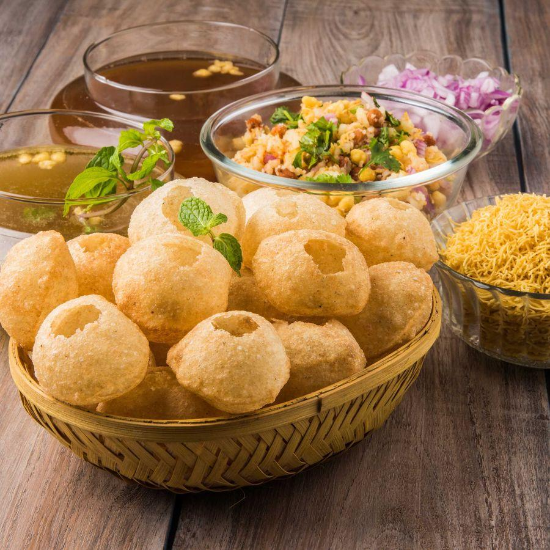
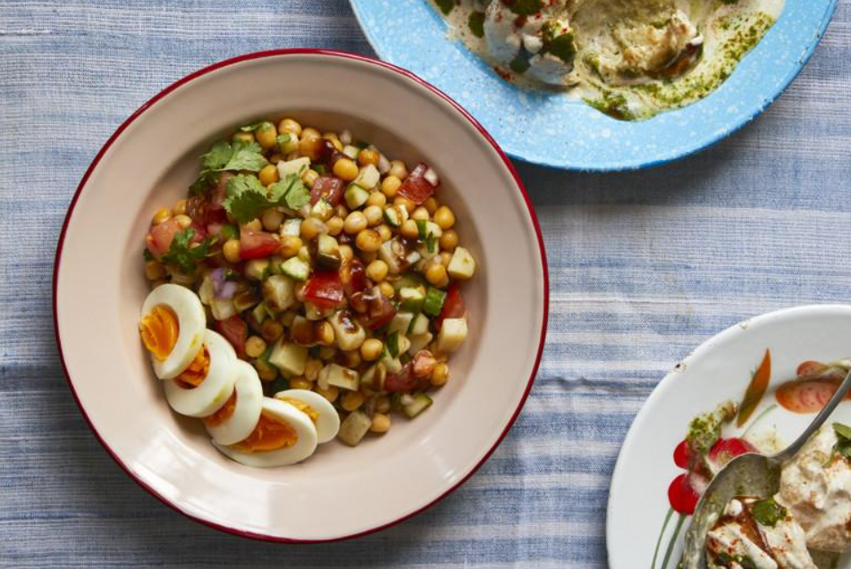
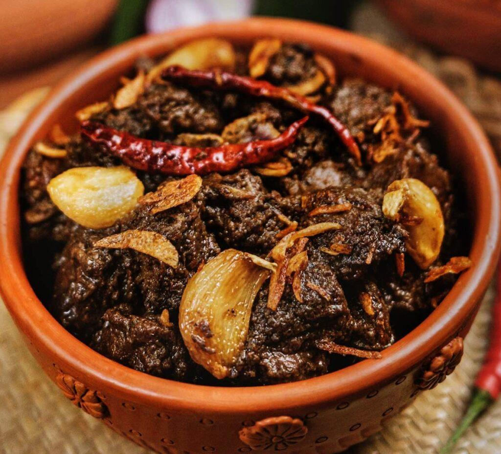
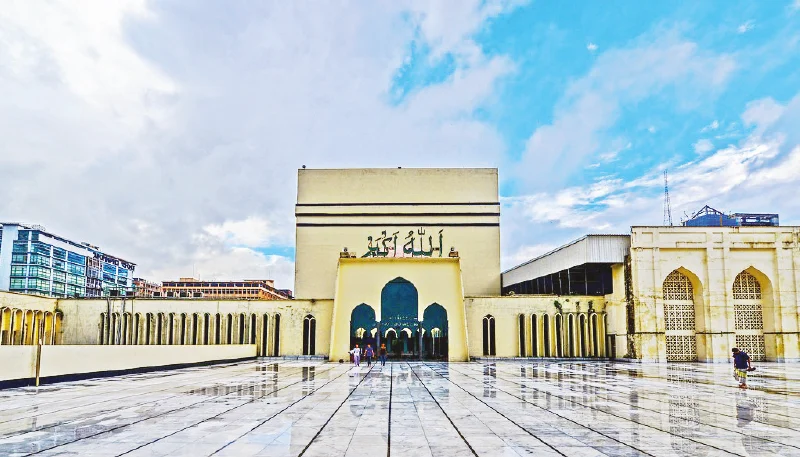
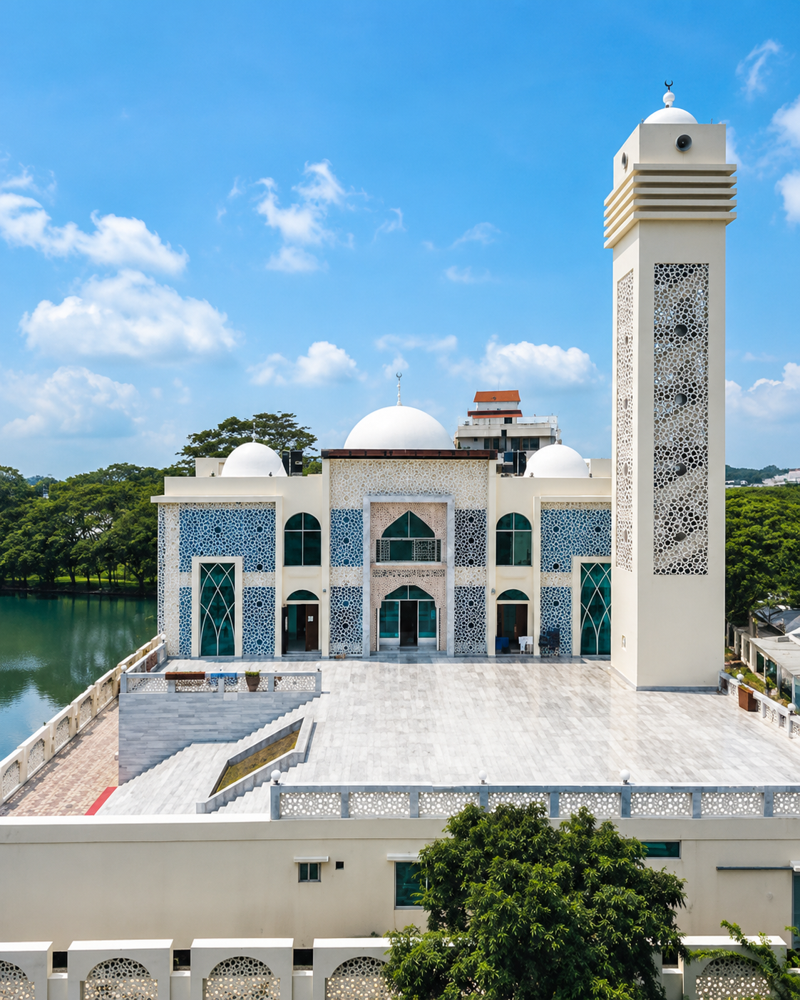
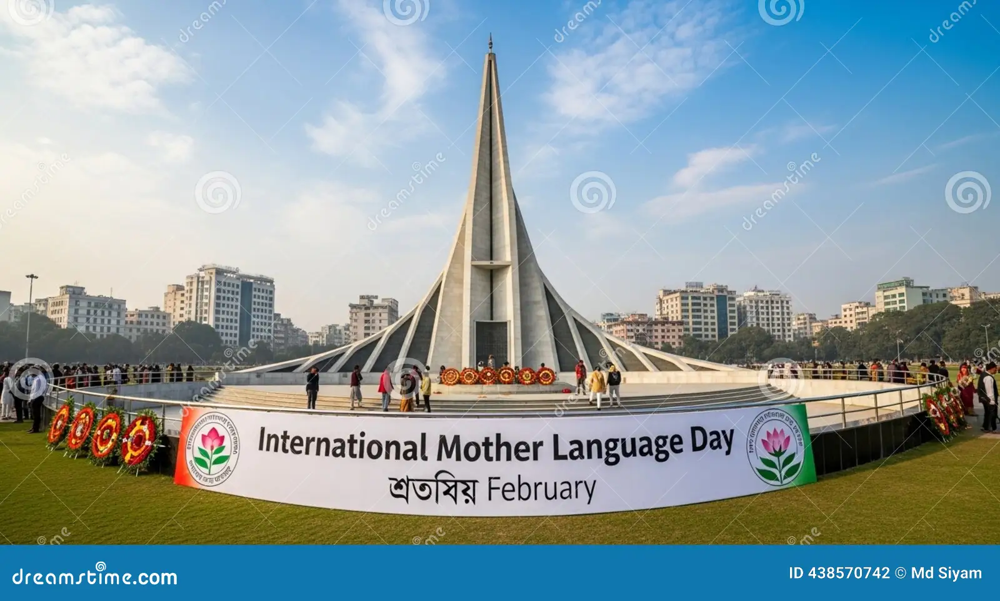
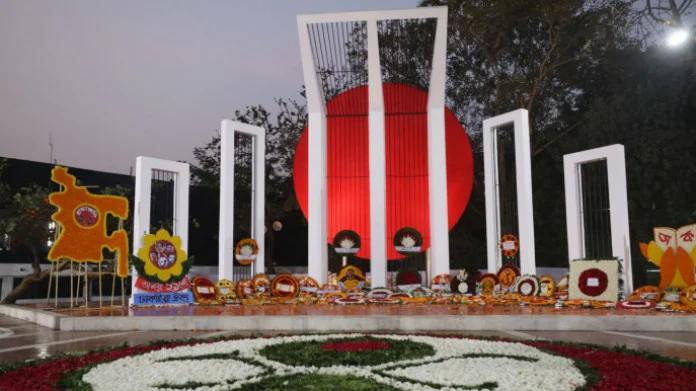
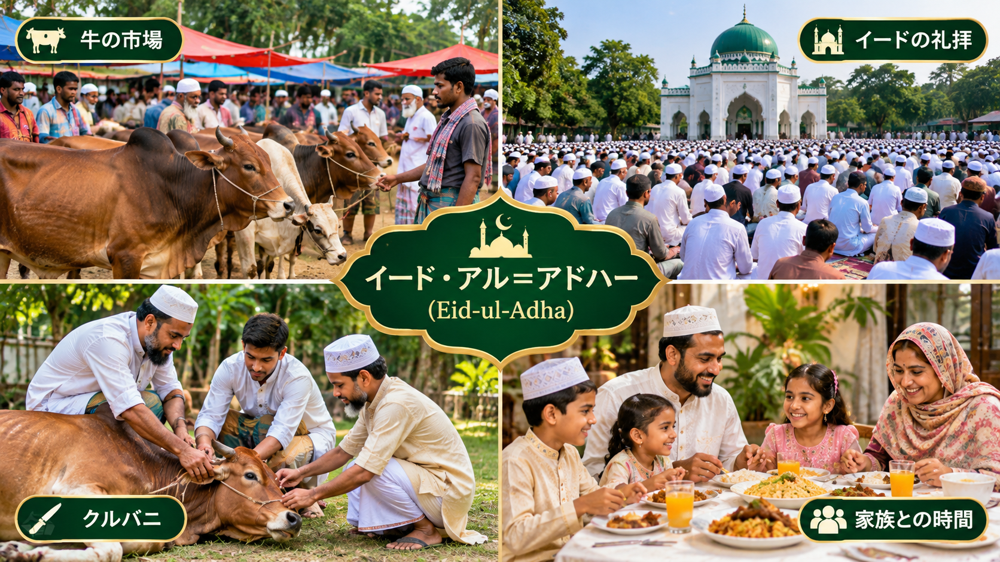

Kacchi Biryani
カッチビリヤニは、バングラデシュ、特に首都ダッカで非常に人気のある伝統料理です。ヨーグルトやスパイスで味付けした生の羊肉と香り豊かなバスマティライス、ジャガイモなどを一緒に重ね、時間をかけて蒸し焼きにします。肉の旨味とスパイスの香りがご飯に染み込み、豊かな風味を生み出します。結婚式やお祝いなど、特別な行事でもよく食べられています。
バングラデシュは南アジアに位置する美しい国です。自然、文化、食べ物、スポーツ、そして温かい人々が魅力です。
ダッカ
10月～3月
BDT
ベンガル語

バングラデシュは、南アジアのベンガル地方に位置する、人口約1億7千万人の国です。首都ダッカは歴史的な建物と賑やかな市場が共存する活気ある大都市で、ガンジス川やブラマプトラ川が作り出した広大な平野には、緑の田園と無数の川が広がっています。南東部のコックスバザールには世界最長級の天然ビーチが続き、南西部のスンダルバンスは世界最大のマングローブ林で、ベンガルトラが暮らす場所として知られています。北東部のシレットには見渡す限りの茶畑が広がり、バンダルバン、ランガマティ、サジェクバレーなどの丘陵地帯では、山、湖、滝、雲海の絶景と先住民族の文化に出会えます。ベンガル語を誇りとする人々は1952年の言語運動の歴史を大切にし、詩や音楽、手工芸、季節ごとのお祭りが今も生き続けています。ビリヤニ、イリッシュ（ヒルサ）、ピタ、フチカといった食文化や、人々に愛されるクリケットも魅力です。旅行のベストシーズンは10月から3月。温かいおもてなしに迎えられながら、あなただけのバングラデシュの旅を始めましょう。
気になる場所を選んで、旅の計画を始めましょう。
もっと見る




バングラデシュの代表的な国立大学と私立大学を紹介します。




